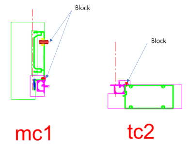

Block
Block은 Anchor, Bolt, Screw처럼 정해진 형상이 있는 부품을 삽입하거나 Surface에 Hole을 만들 때 사용하는 Section 요소입니다.
규격이 정해진 부품을 단면에 반복 배치하거나, Surface에 Subtract(Hole)를 적용해야 할 때 사용합니다. Pname의 Block Data에서 삽입 방식과 위치 간격을 지정해 두면 모델링 시 부품이 자동으로 배치·관통되어, 동일 부품을 일관된 위치에 넣을 때 유용합니다.
Pname의 Block Data에서 삽입 방식과 위치 간격을 입력합니다.
| 항목 | 설명 |
|---|---|
| 레이어 | 원하는 Layer 이름을 사용할 수 있습니다. |
| 주요 용도 | Block 삽입, Hole 생성, 정해진 형상의 부품 배치 |
| 배열 정보 | 규칙적인 배열은 Pname에서 위치, 간격, 수량을 입력합니다. |
| 항목 | 설명 |
|---|---|
| BlockOpt | 저장된 Block 을 삽입하도록 도와준다. |